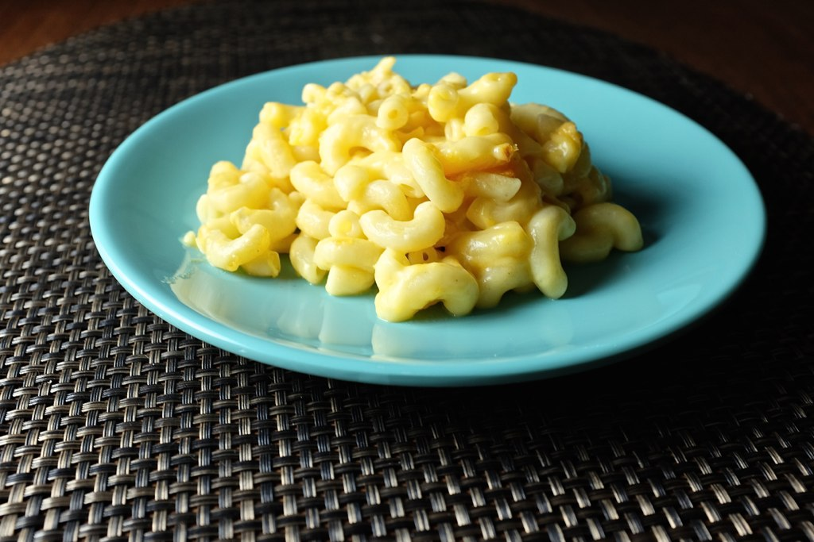

Mac N Cheese
Home

Description
Mac n cheese is a staple in my house and this recipe is a super simple one pot wonder.
This is a super versitile recipe where you can change up the herbs and spices to whatever you prefer, you can also add any kind of mix ins like diced ham, bacon or sausage to add some extra flavour
Ingredients:
- 1 bag of macaroni
- 5 cups of milk
- a knob of butter
- just grate a crap ton of cheese
- herb mix
- garlic
- garlic powder
- garlic salt
- cracked pepper
Steps:
- Add milk and macaroni to a big pot, stir regularly
- It takes a while but once the milk cooks down and starts to thicken add the butter
- Dump in the cheese
- Add the herbs and spices and garlic
- keep stirring until it is nice and thick
- Serve